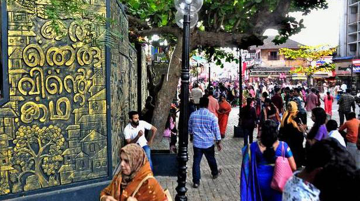
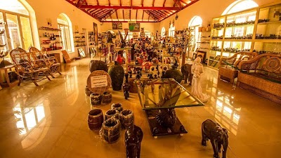

S.M Street
In Kozhikode district, one can find that the legendary Sweet Meat (SM) street or Mithai Theruvu is a must go place for such delicacies and it is the busiest street in Kozhikode. Named from the times
when the street was lined with sweet meat (halwa) stalls, it is today a popular haunt for locals and tourists alike.
1 / 3

2 / 3

Kappad Beach
Kappad Beach has historically played an important role in the history of Kerala. On these shores, over 500 years ago in 1498, 170 men led by Vasco- da-Gama first stepped onto Kerala. His voyage established the sea route from Europe to India.The nearby shacks are always stocked with excellent local delicacies and tea.
Kappad Beach has historically played an important role in the history of Kerala. On these shores, over 500 years ago in 1498, 170 men led by Vasco- da-Gama first stepped onto Kerala. His voyage established the sea route from Europe to India.The nearby shacks are always stocked with excellent local delicacies and tea.
3 / 3

Sargaalaya
Sargaalaya is a 20-acre arts and crafts village in Iringal, in Koyilandy, Kerala, India. It was established at a cost of around 15 crores on 19 February 2011 by The Kerala Tourism Department.
Sargaalaya is a 20-acre arts and crafts village in Iringal, in Koyilandy, Kerala, India. It was established at a cost of around 15 crores on 19 February 2011 by The Kerala Tourism Department.